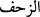

hâlindeyken sürünüyor gibi göründüğünden orduya “zahf” (
) denilmiştir.
Ordudan kaçmaktan maksad, savaş hâlindeyken ordudan kaçmaktır. Düşman, sayıca
İslâm ordusuyla eşit veya az olsa da kaçmamak gerekir.
Son hadis, tâûndan kaçmanın haramlığına delâlet eder. Tâûndan kaçmak büyük günah
olup, kaçanın ömrünün kısalmasına sebeb olabilir. Nitekim Allah Teâlâ cihâddan
kaçmayı ömürlerin kısalmasına sebeb kılmış ve şöyle buyurmuştur; “(Rasûlüm) de ki:
Eğer ölümden veya öldürülmekten kaçıyorsanız bilin ki kaçmanın size asla faydası
olmaz. Kaçsanız bile az bir zamandan fazla yaşatılmazsınız.” (el-Ahzâb, 33/16)
Kaçmak maksadı olmadan, tâûn beldesini terketmeye ise ruhsat verilmiştir. Ancak bu
ruhsatın çok az kimsenin gerçekleştirebileceği ağır ve zor şartları vardır. Bu şartlar:
İ’tikâdı korumak, bozuk hava gibi hastalığa sebeb olacak sebeblerden korunmak gibi
şeylerdir. Şu var ki, sırf ölümden kurtulmak için korunma tedbîrlerine sarılmak; boş ve
basît bir davranıştır. Hastalık bulunan bölgeden bu sebeble ayrılmanın haram olmasında
müslümanların önde gelenleri bir tarafa, halk bile ittifak hâlindedir.
Peygamber Efendimiz’in “hastalara yakın olmak ölüm sebebidir”[294] hadîsinden
anlaşıldığı gibi, bâzı hastalıklar çevreye yayılma özelliğine sâhib; yâni bulaşıcıdır.
Peygamberimizin “bulaşma yoktur”[295] diye başlayan hadîsi câhiliyye döneminde
inanıldığı gibi, “hastalığın tabîatı itibariyle” bulaşıcı olmadığını belirtmek içindir.
Yoksa hadîsten hastalıkların hiç bulaşıcı olmadığı anlamı çıkarılmamalıdır.
Sülûkün başlangıcında olanlar ile avâmın, hasta olduklarında sebeblere sarılması
vâcibtir. Sülûkün ortasında bulunanlara tevekkül etmek daha iyidir. Kemâle eren
kimselere gelince onların hallerini herhangi bir duruma hasretmek doğru olmaz. Onlar
için tevekkül de sebeblere sarılmak da aynıdır. Nitekim Mesnevî’de şöyle gelmiştir;
Ortalığı karıştıracak şeyden sakınmak hayırdır.
Sen yürü git Hakk’a tevekkül et, çünkü tevekkül çok güzeldir.
Ey şiddet ve hiddet sâhibi, sana kaya ile vurana mukabele etme!
Tâ ki hükm-i kazâ seninle, inâdla kavgaya tutuşmasın.
Hükm-i kazâya teslîmiyette ölü gibi olmak gerekir.
Tâ ki âlemlerin rabbından zahmet ve sıkıntı gelmesin.
Rivâyete göre Calinus ölmeden önce arkadaşlarına yuvarlak iki demir parçası verdi
ve: “Ben öldükten sonra bu demirlerin birini örs üzerine koyun, diğerini de su dolu bir
küpe atın, sonra da küpü kırın.” dedi. Arkadaşları vasiyyeti gereği demir parçasının
birini su dolu küpe attılar. Calinus öldükten sonra küpü kırdılar. Bir de baktılar ki, yere
düşen demir parçası eriyip yok oldu. Dökülen su donarak öylece kaldı. Kabı kırıldığı
halde akıp gitmedi. Hikmet ehli kişiler bu olaydan şu netîceyi çıkardılar. Calinus bu
yaptığı acâib işle şunu demek istemiştir: “Ben en sert cismi eritmeyi, tabîatı itibariyle
akıp giden suyu kapsız muhâfaza etmeyi başardım. Ancak ölüme bir çâre bulamadım.”
Bir şâir şöyle demiştir:
Ey aldanan kişi, geç kalmadan tevbe et,